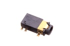

3.5 mm SMD Headphone Socket - 10C1
Summary
Name: 3.5 mm SMD Headphone Socket
ID: HEDS-35D-X-SMDS-01
Hex ID: 10C1
WebPage: https://github.com/oomlout/oomlout-OOMP/wiki/HEDS-35D-X-SMDS-01
Short URL: http://oom.lt/10C1
Revision History: https://github.com/oomlout/oomlout-OOMP/blob/master/parts/HEDS-35D-X-SMDS-01/
| Type |
Size |
Color |
Description |
Index |
HEDS
Headphone Socket |
35D
3.5 mm |
X
|
SMDS
SMD |
01
|
Images


About
This part is awaiting a description.
Specifications
| Info |
Value |
| Type |
Headphone Socket |
| Size |
3.5 mm |
| Description |
SMD |
Extra Details
Spotted a mistake, want to add more? Let us know oomp@oomlout.com
All images and resources are licensed [CC BY-SA] unless otherwise stated (ie. the datasheets)